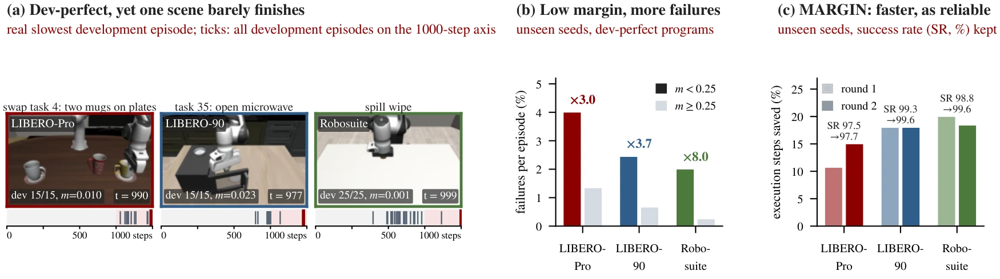

Uses the slowest successful development rollout; Tₘₐₓ = 1,000.
ROBOT-USE AGENTS · RISK-AWARE REFINEMENT
MARGIN
A Risk-Aware Agent for Robot Program Refinement
Turning successful executions into evidence for the next improvement.

01 / RESEARCH OVERVIEW
Abstract
Robot-programming agents improve executable control policies through repeated testing and repair, yet binary success saturates while execution risk persists across unseen scenes. We introduce MARGIN, a risk-aware agent that converts successful robot rollouts into actionable evidence for program refinement. Its near-miss margin measures the fraction of the execution budget remaining in the slowest successful development rollout. The agent uses this signal to prioritize fragile programs, guide targeted repairs, and select revisions that preserve development success while increasing execution headroom. An exact safe-racing rule accelerates success-based candidate evaluation. Across LIBERO-Pro, LIBERO-90, and Robosuite, the near-miss margin predicts unseen failures and MARGIN shortens executed control sequences. Paired execution probes provide additional evidence for detecting hidden regressions before accepting candidate programs.
98.2%LIBERO-Pro80-task final program suite
99.6%LIBERO-9090-task success
99.6%RobosuiteSeven-task manipulation
0.774Risk predictionLIBERO-Pro fresh-seed AUC
53.5%Evaluation savingsFixed-sequence candidate sweeps
02 / METHOD
The MARGIN framework
MARGIN adds a decision layer to an ASPIRE-style agentic debugging loop, switching from efficient success-based evaluation to risk-triggered refinement after development success saturates.
Algorithm 1 · Decision policy
Select a stage to see its ruleS(P) = ∑ yₛ(P), N = 15
An agent proposes and executes candidate programs on development initializations, collecting outcomes and control-step counts.
Refinement begins after development success saturates. The first-round threshold is θ = 0.25.
Preserve development success and improve the minimum margin; δ = 0.02, with provenance audit.
03 / MAIN EXPERIMENTS
Results across three benchmarks
Success-rate comparisons, risk prediction, and execution efficiency using independently evaluated robot programs.
LIBERO-Pro 80 tasks
98.2%
MARGIN · full 80-task result
ASPIRE reproduction 98.2%
LIBERO-90 90 tasks
99.6%
MARGIN · refinement evaluation
ASPIRE reproduction 99.2%
Robosuite 7 tasks
99.6%
MARGIN · refinement evaluation
ASPIRE reproduction 99.3%
LIBERO-Pro · Eight fine-grained suites
| Suite | ASPIRE (%) | MARGIN (%) | Refined | MARGIN success |
|---|---|---|---|---|
| Object P | 99.2 | 99.2 | 0/10 | |
| Object T | 100.0 | 100.0 | 0/10 | |
| Spatial P | 98.8 | 98.6 | 3/10 | |
| Spatial T | 98.4 | 98.9 | 8/10 | |
| Goal P | 98.4 | 98.5 | 6/10 | |
| Goal T | 98.8 | 99.2 | 2/10 | |
| LIBERO-10 P | 93.8 | 93.4 | 9/10 | |
| LIBERO-10 T | 98.0 | 97.8 | 9/10 |
P and T denote position and task perturbations. Task-wise aggregation across the complete 80-task suite. See the searchable task explorer below for details.
Comparison with recent robot-use agents and policies
Full literature baselines from the manuscript, grouped by agentic robotics methods, agent-assisted policies, and learned robot policies.
78 / 80Dev-perfect selected programs
0.774Fresh-seed risk AUC
2.97×Low-margin risk ratio
53.5%Fewer candidate evaluation episodes
04 / SUPPLEMENTARY EVIDENCE
Beyond the main results
Explore extended figures from the supplementary material, including risk curves, per-task results, repair trajectories, costs, ablations, and qualitative robot galleries.
Success-saturated programs still differ in unseen-scene failure risk.
Margin-guided refinement
Accepted repair sessions reveal how additional development evaluation improves their margin.
Performance across tasks
Execution-step changes on transferred tasks complement aggregate success rates.
05 / EXECUTION EVIDENCE
When a faster program is not enough
Paired diagnostic execution tests candidate regressions, recoveries and additional evidence cost.
Evidence-policy comparison
| Policy | Probe episodes | VLM calls | Regressions (%) | Recoveries (%) | Mean steps |
|---|---|---|---|---|---|
| S | 0 | 0 | 0.00 | 0.00 | 648 |
| A0 | 0 | 0 | 0.68 | 0.89 | 550 |
| A1 | 1,040 | 0 | 0.54 | 0.84 | 554 |
| A1r | 1,040 | 0 | 0.59 | 0.86 | 552 |
| A1all | 2,960 | 0 | 0.43 | 0.81 | 555 |
| A2 | 0 | 26 | 0.59 | 0.78 | 553 |
| A3 | 200 | 26 | 0.62 | 0.89 | 552 |
37 tasks, 74 candidate programs, seven evaluation policies. Values come from the archived Phase D evidence-policy study. Lower regressions may entail additional diagnostic execution cost.
Evaluation and refinement cost
| Benchmark | Campaign cost | Repair round 1 | Repair round 2 |
|---|---|---|---|
| LIBERO-Pro | — | $68.2 | $95.5 |
| LIBERO-90 | $1124* | $51.2 | $99.7 |
| Robosuite | $110 | $14.8 | $8.5 |
Approximate LLM USD from the experiment cost ledger. LIBERO-Pro discovery cost is not repeated in the repair-cost ledger. Costs are not equivalent to wall-clock execution time.
06 / EXECUTION VIDEOS
Robot execution comparisons
Paired original and refined program visualizations from recorded simulator keyframes. These are keyframe event replays, rather than continuous captured rollout videos.
LIBERO-Pro / RECOVERY
Near-miss recovery
Original program reaches the control-step budget; the selected repair completes the manipulation.
ASPIRE · 990 stepsMARGIN · 790 steps
LIBERO-Pro / EFFICIENCY
Shorter successful execution
Both programs complete the task; the revised code follows a shorter trajectory.
ASPIRE · 821 stepsMARGIN · 546 steps
LIBERO-Pro / VERIFICATION
Hidden regression
The revised program can introduce a new incomplete placement on another unseen initial state.
Paired evaluationOutcome verification
07 / FULL TASK DATA
Search the experiment records
Browse the archived 80-task LIBERO-Pro evaluation, 90-task LIBERO-90 records and seven Robosuite tasks. Filters and sorting work locally; no external requests.
80 tasks
| Task | Suite | ASPIRE (%) | Final MARGIN (%) | Margin headroom |
|---|
MARGIN task-level values are shown for the complete LIBERO-Pro aggregate. LIBERO-90 and Robosuite task tables show their archived reproduction records; refinement outcomes are summarized separately above.
08 / PAPER MATERIALS
Resources & citation
Selected figure sources, numerical records, and the reproducible site build are bundled with this project page.
Current Fig. 2Latest vector diagram ↧Task-level results177 records · CSV ↧Evidence ablationSeven policies · JSON ↧Cost breakdownThree benchmarks · JSON ↧
@misc{margin2027,
title = {MARGIN: A Risk-Aware Agent for Robot Program Refinement},
year = {2027},
note = {Anonymous project preview}
}Citation metadata will be updated when the public paper record becomes available. No author identity, private repository link or tracking code appears in this preview.